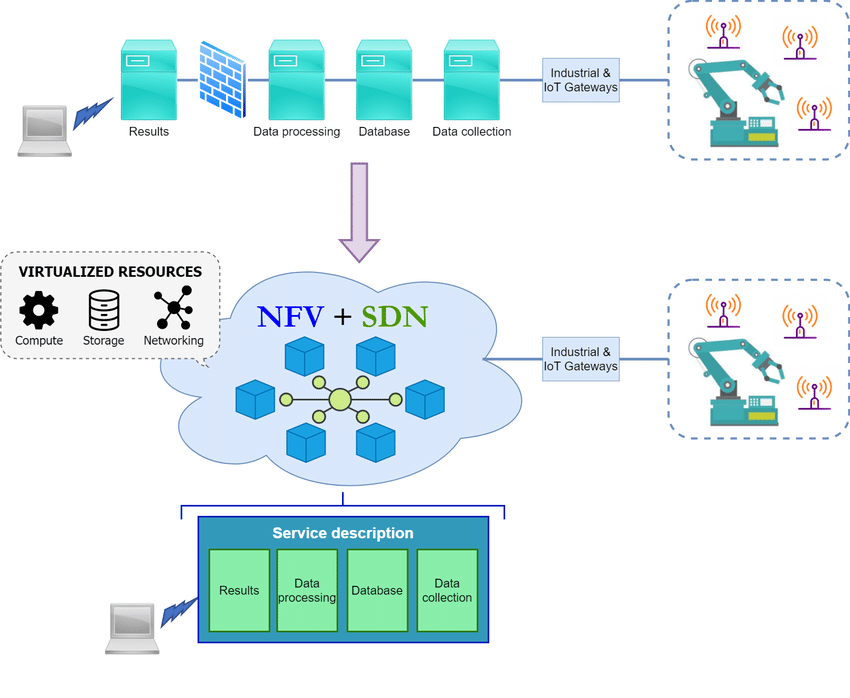

SDN (Software Defined Networking)
A tecnologia SDN possui diversas características em comum com a tecnologia NFV, pois ambas se baseiam no conceito de virtualização de funções de rede. A arquitetura SDN é composta por três camadas principais: Camada de Infraestrutura, Camada de Controle e Camada de Aplicação. Ao contrário das redes tradicionais, o controle e gerenciamento da rede em SDN tornam-se programáveis, uma vez que estão desvinculados das funções de encaminhamento de dados (forwarding functions).
SDN e NFV podem ser vistas como tecnologias complementares, oferecendo uma solução integrada para redes. Por exemplo, aplicações de gerenciamento em um controlador SDN, como balanceamento de carga, monitoramento e análise de tráfego, podem ser tratadas como VNFs (Virtual Network Functions), aproveitando a flexibilidade e confiabilidade da tecnologia NFV. Por outro lado, a NFV pode se beneficiar da SDN, acelerando sua implementação ao possibilitar o encadeamento automático de funções, provisionamento e configuração da rede, entre outras vantagens.
Apesar das semelhanças, SDN e NFV são conceitos distintos, com objetivos diferentes. Enquanto a NFV busca desvincular as funções de rede dos dispositivos de hardware especializados, o SDN propõe a separação completa entre o controle e o gerenciamento da rede. Além disso, a NFV pode ser implementada em redes existentes, pois funciona em servidores e interage com o tráfego que lhes é direcionado. Já o SDN exige a construção de uma nova rede onde os planos de controle e dados estão separados.

Esquema de complementariedade entre NFV e SDN
Cloud Computing
Cloud Computing consiste no compartilhamento de recursos computacionais (redes, servidores, armazenamento, aplicações e serviços) que pode ser rapidamente disponibilizado com o mínimo de esforço operacional ou interação do provedor do serviço. Uma das principais características do modelo de computação em nuvem é a capacidade de permitir acesso de clientes de uma variedade de plataformas (celulares, tablets e laptops) ao recursos computacionais do provedor de serviço. Esses recursos podem ainda ser disponibilizados ou liberados rapidamente, frente à necessidade de se adaptar à uma maior demanda pelos mesmos. Além disso, os sistemas em nuvem conseguem fazer o controle e otimização dos seus recursos automaticamente, medindo a capacidade para cada tipo de serviço.
Existe uma correspondência clara entre o modelo IaaS do Cloud Computing e a camada NFVI, relacionada com os recursos físicos e virtuais, bem como entre o modelo de serviço SaaS com a camada VNF do NFV. Dessa forma, o NFV pode se beneficiar de um serviço de virtualização já existente, com grande capacidade de armazenamento e processamento, cuja rapidez de disponiblidade de recursos, controle e otimização automáticos dos mesmos, são de grande valor para a virtualização de funções de rede.
Os primeiros testes do NFV foram realizados e implementados em máquinas virtuais na nuvem, se beneficiando da flexibilidade da Cloud e do baixo custo. Entretanto, a aplicação em larga escala de funções de rede na nuvem apresenta um grande desafio, já que as redes de telecomunicações podem requisitar uma alta performance da nuvem, além de confiabilidade e disponibilidade dos serviços. Algo que, atualmente, é provido pela infraestrutura das empresas de telecomunicações.

Cloud Computing